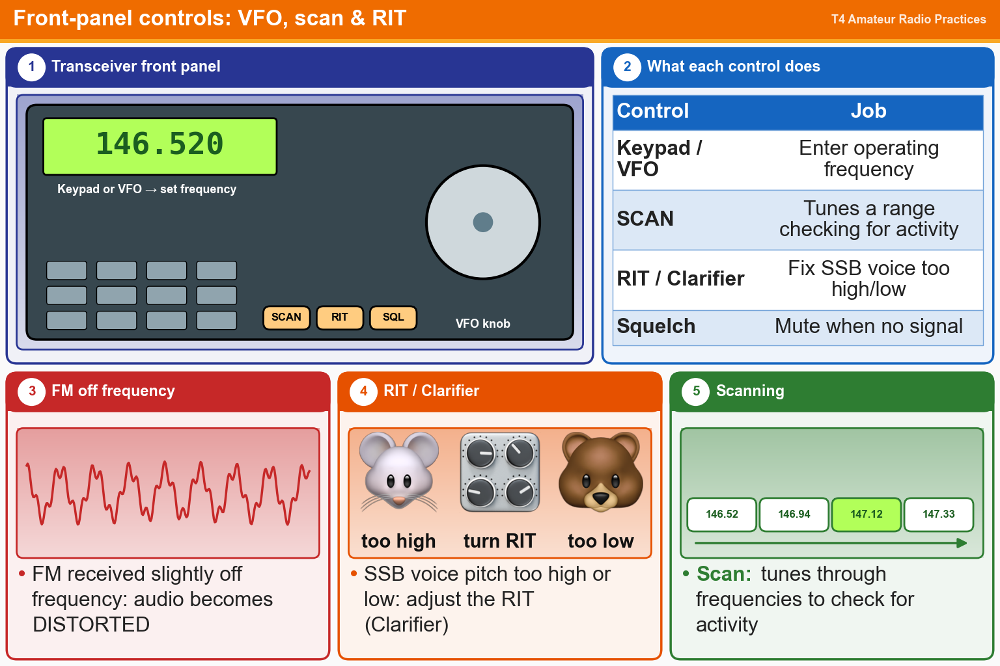

💡 Keypad or VFO sets the frequency. RIT fixes SSB voices that sound too high or too low.
Pick an answer for each question, then press Grade at the bottom.
T4B02
Which of the following can be used to enter a transceiver’s operating frequency?
✘A.The Automatic Frequency Control
✔B.The keypad or VFO knob
✘C.The CTCSS or DTMF encoder
✘D.All these choices are correct
T4B05
What does the scanning function of an FM transceiver do?
✔A.Tunes through a range of frequencies to check for activity
✘B.Prevents interference to nearby repeaters
✘C.Tunes through a range of frequencies to determine the antenna’s resonant frequency
✘D.Checks incoming signal deviation
T4B06
Which of the following controls could be used if the voice pitch of a single-sideband signal returning to your CQ call seems too high or low?
✘A.The bandwidth selection
✘B.The AGC or limiter
✔C.The RIT or Clarifier
✘D.The tone squelch
T4B04
What does an FM signal sound like when received slightly off frequency?
✘A.There is no effect except for reduction in amplitude
✔B.The audio becomes distorted
✘C.The audio increases in pitch
✘D.The audio decrease in pitch